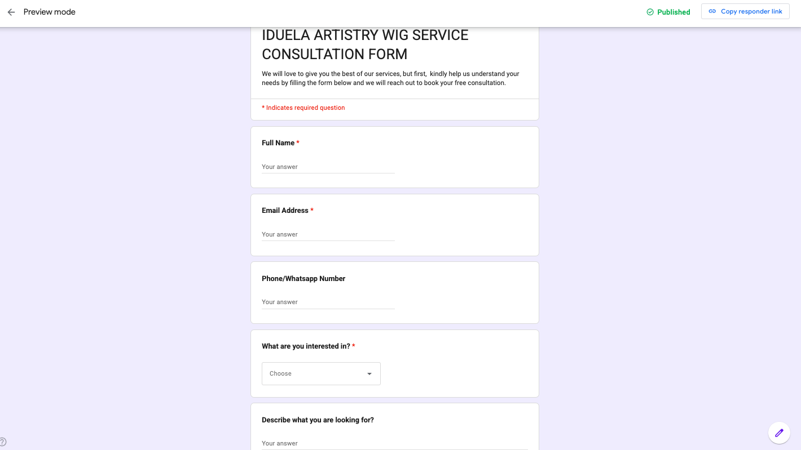
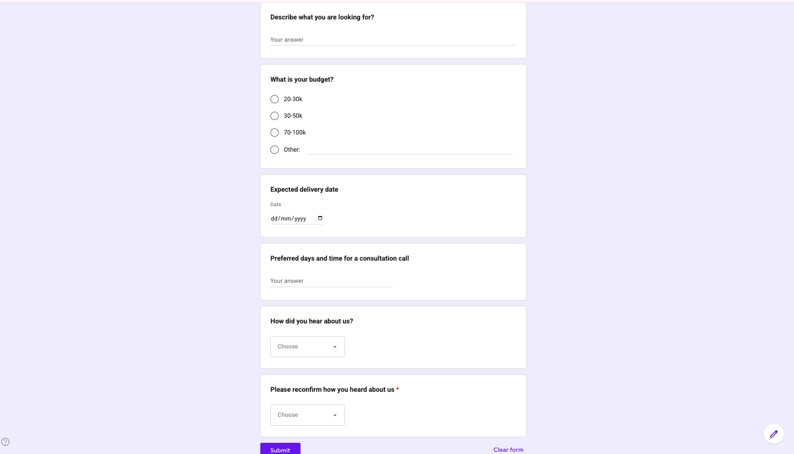
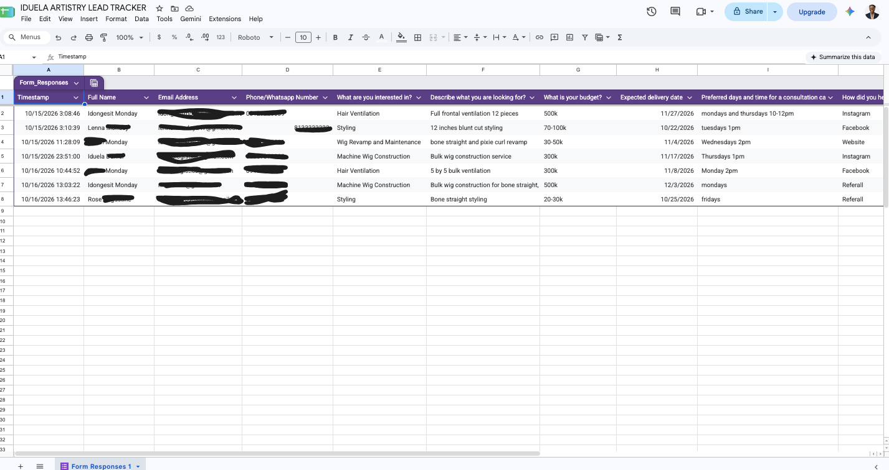
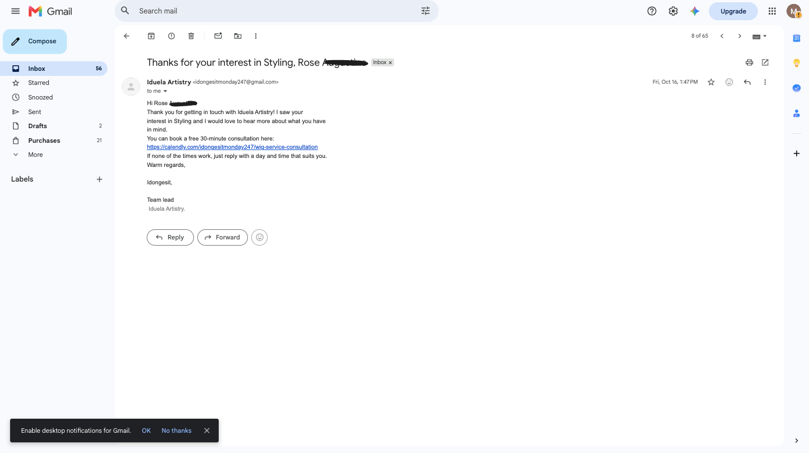
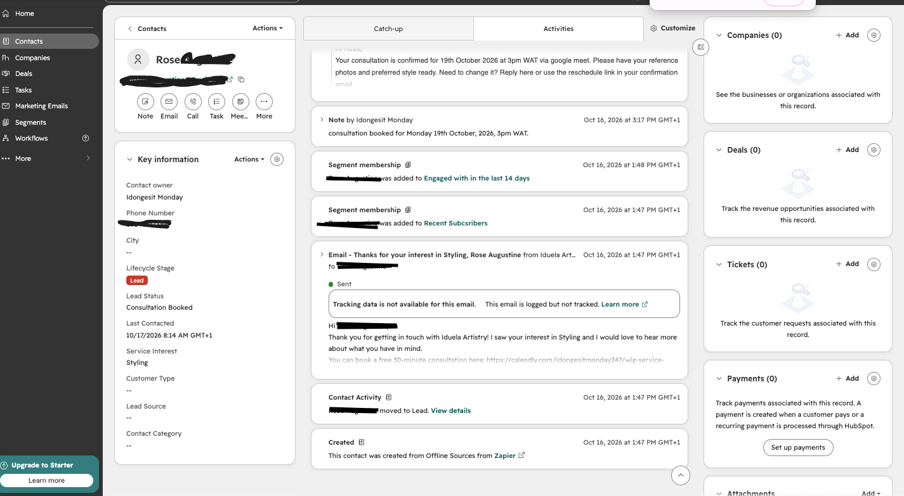
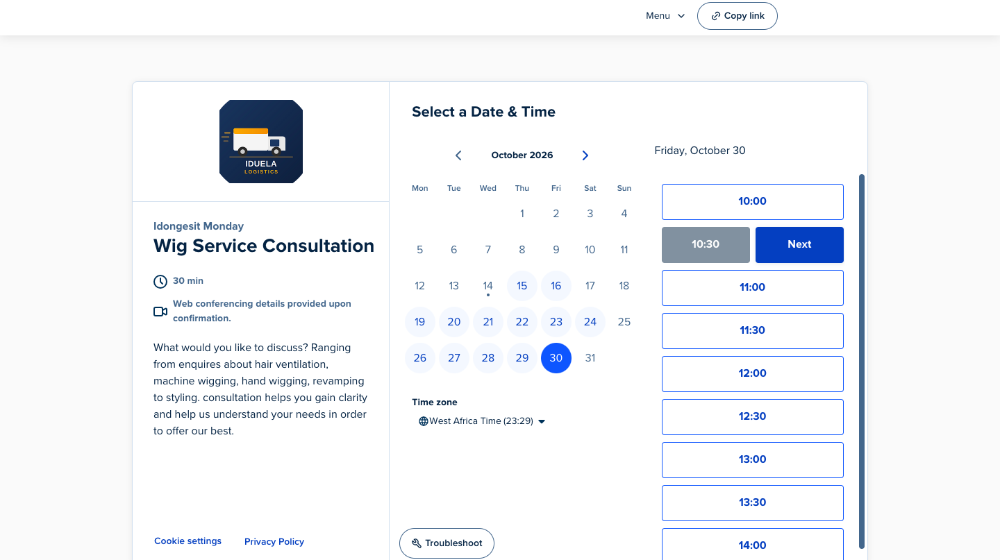
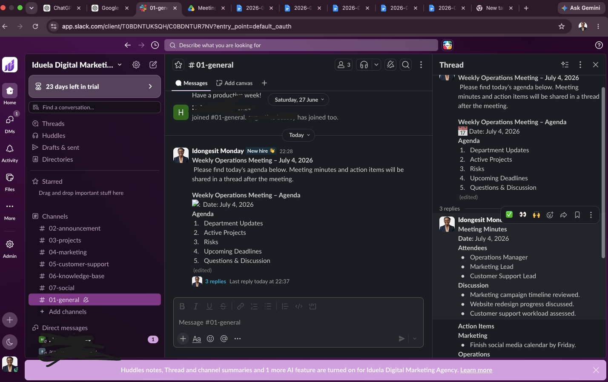

The situation
Iduela Artistry received inquiries from several places at once: Facebook, referrals, phone calls and email. Booking a consultation meant a long back-and-forth of messages, leads were easy to lose, double-bookings were a risk, and nobody knew which channels were actually bringing customers in. On the team side, meetings and updates lived in scattered chats, so agendas and action items were easy to miss.
My role
I designed and set up the whole process: lead capture, scheduling, reminders and record keeping, plus a simple system for running team meetings and communication.
The approach
Part A: The booking system (Iduela Artistry)
- Built a Google Form that sends every inquiry into a Lead Tracker sheet, including where the customer heard about the brand (Facebook, referral and so on).
- Set up one Calendly event, a 30-minute Product Consultation, connected to Google Calendar so customers pick their own time.
- Used Zapier and Gmail to send an automatic thank-you email with the booking link when a new lead arrives.
- Logged every contact in HubSpot's free CRM, with a note on how they reached out.
- Used WhatsApp for manual follow-ups where customers prefer it.
- Kept phone-call bookings in a separate sheet, so the automatic email would not fire and cause a double booking.
Part B: Keeping the team organized (Iduela Digital Marketing Agency, Slack)
- Set up a Slack workspace with function-based channels (general, announcements, projects, marketing, customer support, knowledge base) and written channel descriptions and naming standards.
- Ran a weekly operations meeting through Slack: posted the agenda, pinned it for visibility, then shared minutes and action items in a thread so follow-ups were tracked in one place.
- Set up notification management (keyword alerts, Do Not Disturb, muted non-essential channels) and used search operators to find files and messages quickly, which is the same discipline as managing a busy inbox.
- Stored the employee handbook and a workspace guide in the knowledge-base and announcements channels so new people can find the rules themselves.
The result
Booking went from a multi-message back-and-forth to one link. Every lead is logged in one place with its source, and no inquiry depends on someone remembering to reply. On the team side, every meeting has an agenda before it and documented action items after it.
What I'd do next
With real booking data, add a funnel report showing inquiries, bookings and no-shows, so the owner can see which channels bring in the most consultations.
Screenshots







